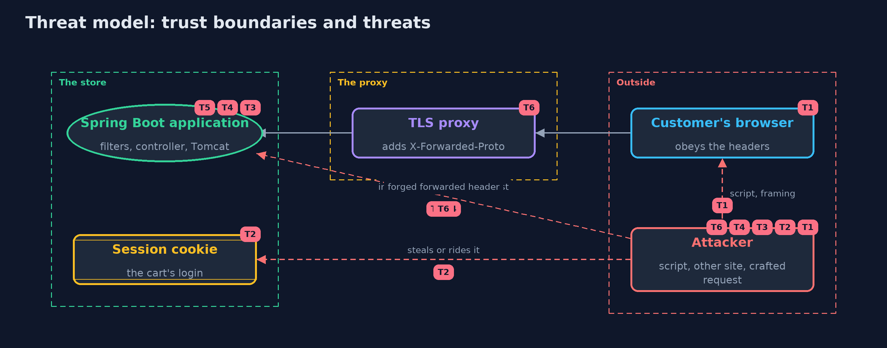

Threat Model — HTTP Basics and Security Headers with Spring Boot
A threat model answers four questions: what are we protecting, who or what could harm it, how, and what do we do about it. This one covers this project's own demo system, not a production deployment. Domain: an online store.
Scope
An online store's Spring Boot web application: the headers it sends to the browser, its session cookie, the requests it accepts, and the proxy in front of it. It covers a script injected into a page, a request from another site, a crafted or oversized request, and a forged forwarded header. It does not cover HTTPS itself, authentication, or the application's own logic.
What we protect (assets)
- The customer's session, held in a cookie.
- The page's content and the customer's browser.
- The server's memory and time.
- The store's belief about whether a request was secure.
Who and what acts on the system
- A customer with a browser that obeys the headers.
- An attacker who can inject a script, build a page on another site, or send crafted requests.
- The proxy that ends HTTPS.
Trust boundaries
A trust boundary is a line that data or a request crosses between parts that trust each other differently. Threats cluster where those lines are.
- Browser to server: the headers are the server's only way to tell the browser how to behave.
- Proxy to application: forwarded headers cross it and must only be believed from the proxy.

Each dashed box is a trust boundary. A rose tag such as T1 shows where the threat of that number, in the table below, applies.
Threats, using STRIDE
STRIDE is a checklist of six kinds of threat: Spoofing (S), Tampering (T), Repudiation (R), Information disclosure (I), Denial of service (D), Elevation of privilege (E).
| Id | Kind | Threat | Where it shows up | Control in this project | What is left |
|---|---|---|---|---|---|
| T1 | Tampering | A script injected into a page runs, or the page is shown inside another site's frame | Shop.Hardened headers |
Content-Security-Policy with default-src 'self' and frame-ancestors, X-Frame-Options, nosniff | The policy must fit the real pages, and only helps browsers that enforce it |
| T2 | Spoofing | The session cookie is read by a script, sent over plain HTTP, or sent with another site's request | the JSESSIONID cookie | HttpOnly, Secure and SameSite=Strict through three properties | SameSite is not a replacement for CSRF tokens, and Strict can break links from other sites |
| T3 | Tampering | Customer text with a line break splits the response or sets a second header | ShopController.echo |
Tomcat refuses a line break in a header value | The code should validate or encode customer text before it reaches a header |
| T4 | Denial of service | An oversized request makes the server read and hold too much | Tomcat's header limit | server.max-http-request-header-size set from real traffic | A limit too small breaks real customers, and body, upload and rate limits are separate |
| T5 | Information disclosure | A malformed request is read differently by two programs | Tomcat's parser | Tomcat refuses a header name with a space with status 400 | A proxy in front must be strict in the same way |
| T6 | Spoofing | A forged X-Forwarded-Proto makes the application believe the request was secure | server.forward-headers-strategy=native |
Believe forwarded headers only from trusted proxies, and keep the application unreachable except through the proxy | If the application is reachable directly, the belief can be forged |
Assumptions
- The application is reachable only through the proxy.
- TLS is handled by the proxy and tested elsewhere.
- In the demo, the stores listen on the loopback interface on free ports.
Out of scope
- HTTPS and certificates: the transport-security module.
- CSRF tokens, authentication and CORS.
- A complete Content-Security-Policy for a real site.
How the tests check this
MockMvcHeadersTestchecks the five headers over HTTPS and plain HTTP, and the refusal of a line break, through the whole filter chain.RealServerTeststarts real servers on free ports and checks scores, the cookie, the injection, the malformed request, the size limit, and an untrusted forwarded header.CookieAndAuditTestchecks the cookie judge and the header audit.DemoRunsTestcompares the whole demo with the golden output.
Where this model goes next
The next module, transport-security, looks at what makes a connection private: the TLS handshake, certificates and HTTPS.